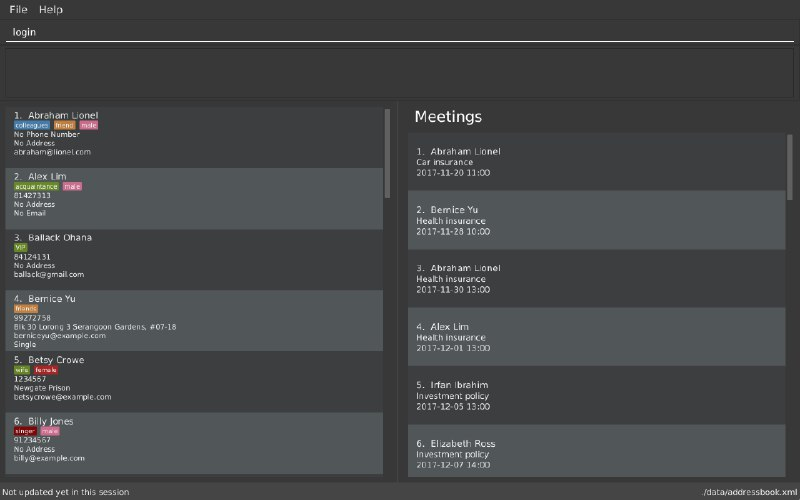
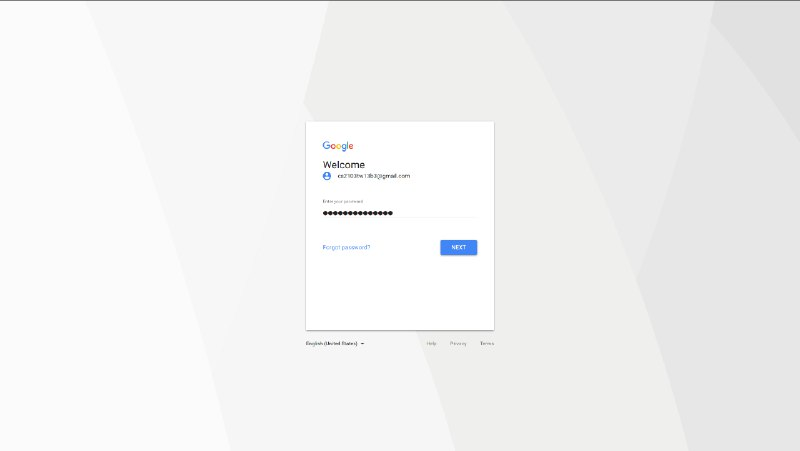
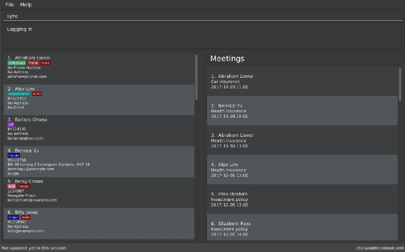
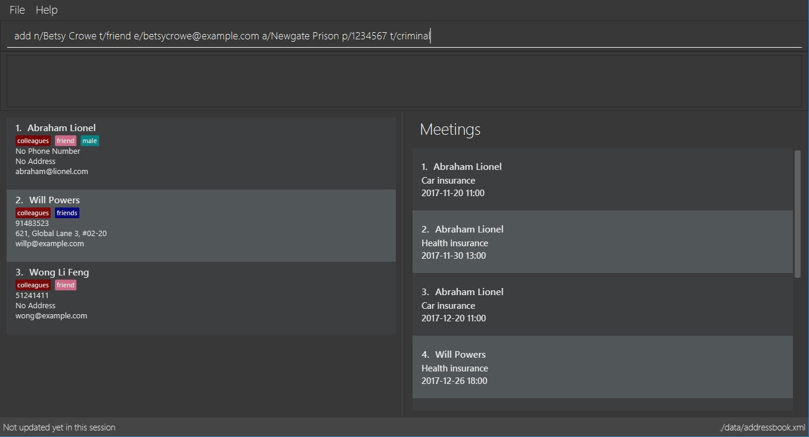

Project: ABC Business Contacts
ABC Business Contact(ABC) is a desktop Business Contact Management application. The user interacts with it using a CLI, and it has a GUI created with JavaFX. It is written in Java.
Code contributed: [Functional code] [Test code]
Logging in to Google Contacts: login
Command Name: login
Shorthand Alias: li
Function: Logs in to Google Contacts
Format: login
It is mandatory to execute this command before running sync
|
If you would like to login to Google Contacts:
-
Type in
>> login
(See Figure 4.17.1)

Figure 4.17.1 -
Press Enter and your default browser should open a login window
(See Figure 4.17.2)

Figure 4.17.2 -
Enter your login details and press Next
(See Figure 4.17.3)

Figure 4.17.3 -
Allow ABC to access your Google Contacts information
(See Figure 4.17.4)

Figure 4.17.4
Synchronising with Google Contacts : sync
Command Name: sync
Shorthand Alias: sy
Function: Synchronises your contacts with Google Contacts after authentication
Format: sync
| A browser is necessary for logging in to Google |
You have to run the login command before you can run sync
|
You can easily synchronise your ABC contacts with Google Contacts through the following steps:
-
Type in
>> sync
(See Figure 4.18.1)

Figure 4.18.1 -
Your contacts are now synchronised
(See Figure 4.18.2 and 4.18.3)

Figure 4.18.2

Figure 4.18.3
Logging out of Google Contacts : logout
Command Name: logout
Shorthand Alias: lo
Function: Logs out of your linked Google Account after you have logged in
Format: logout
| You should only use this command if you would like to log out of your linked Google account |
You can log out of your linked Google Account by doing the following:
-
Type in
>> logout
(See Figure 4.19.1)

Figure 4.19.1 -
You are now logged out
(See Figure 4.19.2)

Figure 4.19.2
End of Extract
Justification
People use their smartphones mainly to access their contacts, and adding synchronisation with Google Contacts provides a way for the modern user to use the ABC Business Contacts application without the hassle of importing and exporting his contacts constantly.
Synchronisation with Google Contacts
Mechanism
Authentication and synchronisation of data with a user’s Google Contacts is done via the sync command, which is a subclass of Command. This command works in conjunction with the Google Client and People API.
Firstly, the command posts an AuthorizationEvent event to the EventCenter, which is then handled by a OAuth class, which is chiefly responsible for authorization and interaction with a user’s Google Contacts. Hence, threading allows for the application to run in the background, while the user can perform other tasks. The user is redirected to login to Google via his default browser through the invoked authorize method. A callback is then done to create a Credential which is then used to instantiate a PeopleService instance. PeopleService is then used to perform create, read, update, and delete (CRUD) functions on the user’s Google Contacts. The following diagram shows the entire sequence. This can be seen in Figure 3.5.1.

_Figure 3.5.1: Sync Command Sequence Diagram
Methods
SyncCommand
Below is the implementation of SyncCommand. Upon execution, the AuthorizationEvent is sent and the command notifies the user that synchronisation has been initiated.
public class SyncCommand extends Command {
//...variables, constructor, other methods
@Override
public CommandResult executeUndoableCommand() throws CommandException {
try {
List<ReadOnlyPerson> personList = model.getFilteredPersonList();
AuthorizationEvent event = new AuthorizationEvent(personList);
EventsCenter.getInstance().post(event);
return new CommandResult(String.format(MESSAGE_SUCCESS));
} catch (Exception e) {
throw new CommandException(MESSAGE_FAILURE);
}
}
}AuthorizationEvent handler
The OAuth class handles the AuthorizationEvent. It first runs the authorize method to obtain a Credential, and uses that to create a PeopleService. The exportContacts method is then invoked to export all contacts from ABC to Google Contacts. Below is the code for the handler.
public class OAuth {
// variables, constructor and other methods
@Subscribe
public static void handleAuthorizationEvent(AuthorizationEvent event) throws Throwable {
new Thread (() -> {
try {
// initialize the transport
httpTransport = GoogleNetHttpTransport.newTrustedTransport();
// initialize the data store factory
dataStoreFactory = new FileDataStoreFactory(DATA_STORE_DIR);
// authorization
Credential credential = authorize();
// set up global People instance
client = new PeopleService.Builder(
httpTransport, JSON_FACTORY, credential).setApplicationName(APPLICATION_NAME).build();
exportContacts(event.getPersonList());
} catch (IOException e) {
System.err.println(e.getMessage());
} catch (Throwable t) {
t.printStackTrace();
}
}).start();
}Authorize with Google servers
Below is the authorize method implemented in OAuth, which uses the People API to get an authorization token. This is used to create a PeopleService to retrieve Google Contacts information. A clients_secret.json file is used to provide the required Client ID and Secret for the Google API. A Credential is returned from this method, which is then used to create a PeopleService.
public class OAuth {
// variables, constructor and other methods
/** Authorizes the installed application to access user's protected data. */
private static Credential authorize() throws Exception {
// load client secrets
GoogleClientSecrets clientSecrets = GoogleClientSecrets.load(JSON_FACTORY,
new InputStreamReader(OAuth.class.getResourceAsStream("/client_secrets.json")));
if (clientSecrets.getDetails().getClientId().startsWith("Enter")
|| clientSecrets.getDetails().getClientSecret().startsWith("Enter ")) {
System.out.println(
"Enter Client ID and Secret from https://code.google.com/apis/console/?api=people "
+ "into seedu/address/src/main/resources/client_secrets.json");
System.exit(1);
}
// set up authorization code flow
GoogleAuthorizationCodeFlow flow = new GoogleAuthorizationCodeFlow.Builder(
httpTransport, JSON_FACTORY, clientSecrets,
Collections.singleton(PeopleServiceScopes.CONTACTS)).setDataStoreFactory(dataStoreFactory)
.build();
// authorize
return new AuthorizationCodeInstalledApp(flow, new LocalServerReceiver()).authorize("user");
}
}Export contacts to Google Contacts
Lastly, AddressBook contacts are then exported to Google Contacts via the exportContacts method. A ReadOnlyPersonList is obtained from the current AddressBook, and iterated through to add their entries into the user’s Google account via the createContact method provided by People API. The code is shown below.
public class OAuth {
/**Uploads AddressBook contacts to Google Contacts
* TODO: Prevent adding of duplicates
*/
private static void exportContacts (List<ReadOnlyPerson> personList) throws IOException {
for (ReadOnlyPerson person : personList) {
Person contactToCreate = new Person();
List<Name> name = new ArrayList<Name>();
List<EmailAddress> email = new ArrayList<EmailAddress>();
List<Address> address = new ArrayList<Address>();
List<PhoneNumber> phone = new ArrayList<PhoneNumber>();
name.add(new Name().setGivenName(person.getName().fullName));
email.add(new EmailAddress().setValue(person.getEmail().value));
address.add(new Address().setFormattedValue(person.getAddress().value));
phone.add(new PhoneNumber().setValue(person.getPhone().value));
contactToCreate.setNames(name)
.setEmailAddresses(email)
.setAddresses(address)
.setPhoneNumbers(phone);
Person createdContact = client.people().createContact(contactToCreate).execute();
}
}Design Considerations
Aspect: Google Authorization
Alternative 1 (current choice): Use a thread
Pros: Users can use the application and execute other commands asynchronously from the authorization.
Cons: More difficult to show the progress of the syncCommand.
Alternative 2: Block the application while waiting for authorization
Pros: Users will know the progress of the SyncCommand.
Cons: Application will freeze if authorization is done, or done in a manner not coded for by the People API (e.g. exiting the window via the 'X' or 'Close' button.
Aspect: Accessing OAuth from Logic
Alternative 1 (current choice): Use an Event and a Subscriber to communicate between the two different components
Pros: Maintains low coupling and prevents unnecessary addition of dependencies.
Cons: Handlers have to be created to handle Events when they occur.
Alternative 2: Create an OAuth object in Logic
Pros: No handlers are required to process Events.
Cons: Introduces unnecessary dependencies.
End of Extract
Making a note: note
Command Name: note
Shorthand Alias: n
Function: Inserts a NOTE for the contact specified by INDEX in the ABC
Format: note INDEX [NOTE]
| Each contact can have at most 1 note |
NOTE can be blank to delete existing note, i.e. note 1
|
If you want to add a note for a contact:
-
Locate the contact and take note of its index
-
Type in your desired INDEX and NOTE
>> note 1 This is an important note
(See Figure 4.13.1)

Figure 4.13.1 -
Press Enter and your note should appear as the last row in your contact’s details
(See Figure 4.13.2)

Figure 4.13.2
Here are some other ways to change your ABC contact’s note:
-
>> note 2
Removes the existing note from the 2nd person -
>> n 3 This is a note
Changes the 3rd contact’s note to "This is a note" -
>> n 3
Removes the existing note from the 3rd person
End of Extract
Justification
Adding a note command enables the user to add notes for his contacts quickly should he need
to jot something down.
Adding a person: add
Command Name: add
Shorthand Alias: a
Function: Adds a person to ABC
Format: add n/NAME [p/PHONE_NUMBER] [e/EMAIL] [a/ADDRESS] [t/TAG]…
| A person can have any number of tags (including 0) |
Parameters can be in any order e.g. n/NAME p/PHONE_NUMBER, p/PHONE_NUMBER n/NAME are equivalent
|
If you want to add a new contact to your ABC:
-
Type in
>> add n/Betsy Crowe t/friend e/betsycrowe@example.com a/Newgate Prison p/1234567 t/criminal
(See Figure 4.2.1)

Figure 4.2.1 -
Press Enter and you should see that a new contact has been added
(See Figure 4.2.2)

Figure 4.2.2
Here are some other ways you can add contacts:
-
>> add n/John Doe p/98765432 e/johnd@example.com a/John street, block 123, #01-01 -
>> add n/Betsy Crowe t/friend e/betsycrowe@example.com a/Newgate Prison p/1234567 t/criminal -
>> add n/Jack Daniels -
>> a n/John Watson p/83331122 e/johnw@example.com a/John Avenue, block 2, #01-01 -
>> a n/Dave
End of Extract
Justification
Not all details are always known about a contact, but it should not prevent a user from adding him/her.
Enhancement Proposed: Add different views for Meetings
A command view is added, where the user can specify how he wants to view his meetings, i.e. by week, month or year
Justification
Users should be able to categorise their contacts by period, i.e. week, month or year